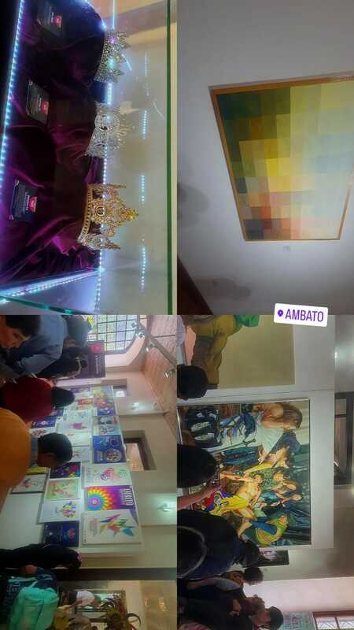
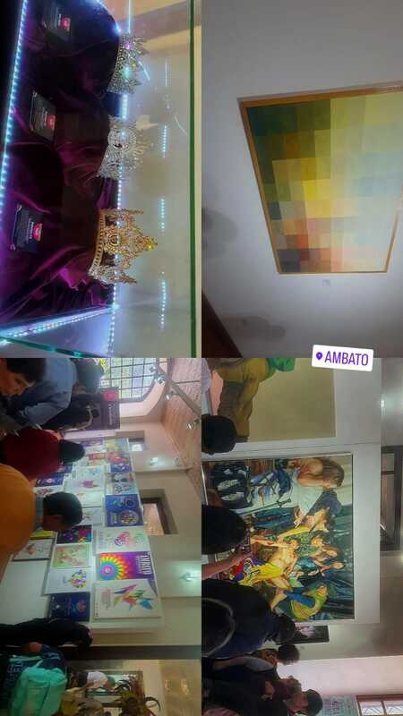
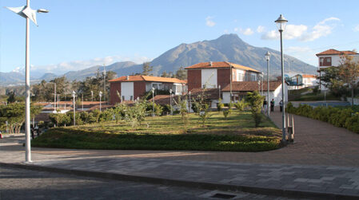
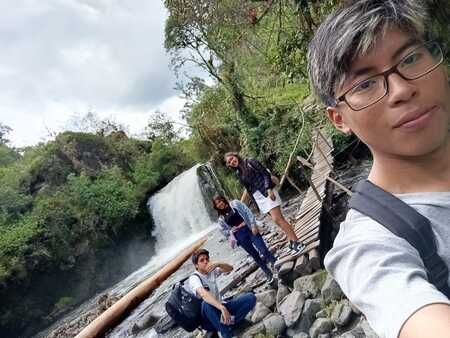
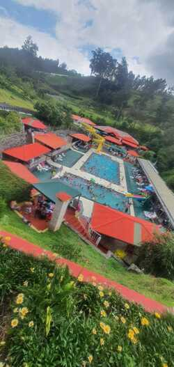
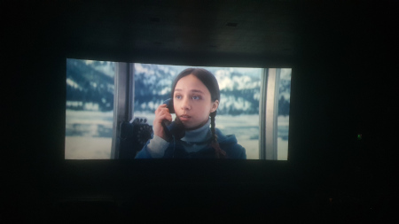

Visita a ambato
Museo de ambato
Viaje familiar por las fiestas de Ambato, donde conocí la ciudad y exploré los museos locales.
Conoce un poco más sobre mis experiencias personales, mis viajes y los momentos que disfruto en mi tiempo libre.
Estos son algunos de los viajes y actividades que me han marcado y que disfruto realizar.
Viaje familiar por las fiestas de Ambato, donde conocí la ciudad y exploré los museos locales.
Viajé con mi prima para conocer las instalaciones donde estudiará y aprovechar para recorrer la ciudad de Ibarra.
Realizamos un viaje con mis compañeros del colegio para visitar varias cascadas durante las vacaciones universitarias. Fue una excelente forma de relajarnos y compartir buenos momentos.
Realizamos un viaje en familia a conocer nuevos lugares como piscina y poder tener un dia de descanzo y relajacion.
Visita al cine a ver una pelicula con mis primos sobre la parte 2 de telefono negro, en donde lo pasamos bien y nos divertimos.
